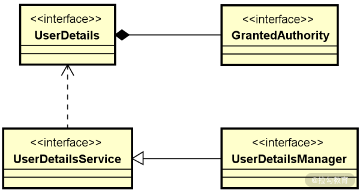
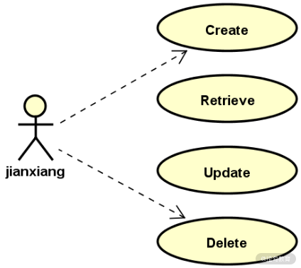
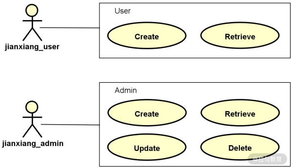

- 00 开篇词 Spring Security，为你的应用安全与职业之路保驾护航.md.html
- 01 顶级框架：Spring Security 是一款什么样的安全性框架？.md.html
- 02 用户认证：如何使用 Spring Security 构建用户认证体系？.md.html
- 03 认证体系：如何深入理解 Spring Security 用户认证机制？.md.html
- 04 密码安全：Spring Security 中包含哪些加解密技术？.md.html
- 05 访问授权：如何对请求的安全访问过程进行有效配置？.md.html
- 06 权限管理：如何剖析 Spring Security 的授权原理？.md.html
- 07 案例实战：使用 Spring Security 基础功能保护 Web 应用.md.html
- 08 管道过滤：如何基于 Spring Security 过滤器扩展安全性？.md.html
- 09 攻击应对：如何实现 CSRF 保护和跨域 CORS？.md.html
- 10 全局方法：如何确保方法级别的安全访问？.md.html
- 11 案例实战：使用 Spring Security 高级主题保护 Web 应用.md.html
- 12 开放协议：OAuth2 协议解决的是什么问题？.md.html
- 13 授权体系：如何构建 OAuth2 授权服务器？.md.html
- 14 资源保护：如何基于 OAuth2 协议配置授权过程？.md.html
- 15 令牌扩展：如何使用 JWT 实现定制化 Token？.md.html
- 16 案例实战：基于 Spring Security 和 Spring Cloud 构建微服务安全架构.md.html
- 17 案例实战：基于 Spring Security 和 OAuth2 实现单点登录.md.html
- 18 技术趋势：如何为 Spring Security 添加响应式编程特性？.md.html
- 19 测试驱动：如何基于 Spring Security 测试系统安全性？.md.html
- 20 结束语 以终为始，Spring Security 的学习总结.md.html
05 访问授权：如何对请求的安全访问过程进行有效配置？
通过前面几讲的介绍，相信你已经对 Spring Security 中的认证流程有了更全面的了解。认证是实现授权的前提和基础，通常我们在执行授权操作时需要明确目标用户，只有明确目标用户才能明确它所具备的角色和权限，用户、角色和权限也是 Spring Security 中所采用的授权模型，今天我就和你一起探讨授权模型的实现过程以及在日常开发过程中的应用方式。
Spring Security 中的权限和角色
实现访问授权的基本手段是使用配置方法，我们已经在“用户认证：如何基于 Spring Security 对用户进行有效认证？”一讲中介绍了 Spring Security 中的配置体系，你可以回顾学习。配置方法的处理过程同样位于 WebSecurityConfigurerAdapter 类中，但使用的是另一个 configure(HttpSecurity http) 方法，示例代码如下所示：
protected void configure(HttpSecurity http) throws Exception {
http
.authorizeRequests().anyRequest().authenticated()
.and()
.formLogin()
.and()
.httpBasic();
}
同样，在 02 讲中我们也已经看到过上述代码，这是 Spring Security 中作用于访问授权的默认实现方法。
基于权限进行访问控制
我们先来回顾一下 03 讲“账户体系：如何深入理解 Spring Security 的认证机制？”中介绍的用户对象以及它们之间的关联关系：

Spring Security 中的核心用户对象
上图中的 GrantedAuthority 对象代表的就是一种权限对象，而一个 UserDetails 对象具备一个或多个 GrantedAuthority 对象。通过这种关联关系，实际上我们就可以对用户的权限做一些限制，如下所示：

使用权限实现访问控制示意图
如果用代码来表示这种关联关系，可以采用如下所示的实现方法：
UserDetails user = User.withUsername("jianxiang")
.password("123456")
.authorities("create", "delete")
.build();
可以看到，这里我们创建了一个名为“jianxiang”的用户，该用户具有“create”和“delete”这两个权限。在 Spring Security 中，提供了一组针对 GrantedAuthority 的配置方法。例如：
- hasAuthority(String)，允许具有特定权限的用户进行访问；
- hasAnyAuthority(String)，允许具有任一权限的用户进行访问。
你可以使用上述两个方法来判断用户是否具备对应的访问权限，我们在 WebSecurityConfigurerAdapter 的 configure 方法中添加如下代码：
@Override
protected void configure(HttpSecurity http) throws Exception {
http.httpBasic();
http.authorizeRequests().anyRequest().hasAuthority("CREATE");
}
这段代码的作用是对于任何请求，只有权限为“CREATE”才能采用访问。如果我们修改一下代码：
http.authorizeRequests().anyRequest().hasAnyAuthority("CREATE", "DELETE");
此时，只要具备“CREATE”和“DELETE”中任意一种权限的用户都能进行访问。
这两个方法实现起来都比较简单，但局限性也很大，因为我们无法基于一些来自环境和业务的参数灵活控制访问规则。为此，Spring Security 还提供了一个 access() 方法，该方法允许开发人员传入一个表达式进行更加细粒度的权限控制。
这里，我们将引入 SpEL，它是 Spring Expression Language 的简称，是 Spring 框架提供的一种动态表达式语言。基于 SpEL，只要该表达式的返回值是 true，access() 方法就会允许用户访问。如下示例：
http.authorizeRequests().anyRequest().access("hasAuthority('CREATE')");
上述代码与使用 hasAuthority() 方法的效果是完全一致的，但如果是更为复杂的场景，access() 方法的优势就很明显了。我们可以灵活创建一个表达式，然后通过 access() 方法确定最后的结果，示例代码如下所示：
String expression = "hasAuthority('CREATE') and !hasAuthority('Retrieve')";
http.authorizeRequests().anyRequest().access(expression);
上述代码的效果是只有拥有“CREATE”权限且不拥有“Retrieve”权限的用户才能进行访问。
基于角色进行访问控制
讨论完权限，我们再来看角色，你可以把角色看成是拥有多个权限的一种数据载体，如下图所示，这里我们分别定义了两个不同的角色“User”和“Admin”，它们拥有不同的权限：

使用角色实现访问控制示意图
讲到这里，你可能会认为 Spring Security 应该提供了一个独立的数据结构来承载角色的含义。但事实上，在 Spring Security 中，并没有定义类似“GrantedRole”这种专门用来定义用户角色的对象，而是复用了 GrantedAuthority 对象。事实上，以“ROLE_”为前缀的 GrantedAuthority 就代表了一种角色，因此我们可以使用如下方式初始化用户的角色：
UserDetails user = User.withUsername("jianxiang")
.password("123456")
.authorities("ROLE_ADMIN")
.build();
上述代码相当于为用户“jianxiang”指定了“ADMIN”这个角色。为了给开发人员提供更好的开发体验，Spring Security 还提供了另一种简化的方法来指定用户的角色，如下所示：
UserDetails user = User.withUsername("jianxiang")
.password("123456")
.roles("ADMIN")
.build();
在“用户认证：如何基于 Spring Security 对用户进行有效认证？”一讲中，我们介绍使用基于内存的用户信息存储方案时就已经看到过这种使用方法，你可以做一些回顾。
和权限配置一样，Spring Security 也通过使用对应的 hasRole() 和 hasAnyRole() 方法来判断用户是否具有某个角色或某些角色，使用方法如下所示：
http.authorizeRequests().anyRequest().hasRole("ADMIN");
当然，针对角色，我们也可以使用 access() 方法完成更为复杂的访问控制。而 Spring Security 还提供了其他很多有用的控制方法供开发人员进行灵活使用。作为总结，下表展示了常见的配置方法及其作用：
| 配置方法 | 作用 |
|---|---|
| anonymous() | 允许匿名访问 |
| authenticated() | 允许认证用户访问 |
| denyAll() | 无条件禁止一切访问 |
| hasAnyAuthority(String) | 允许具有任一权限的用户进行访问 |
| hasAnyRole(String) | 允许具有任一角色的用户进行访问 |
| hasAuthority(String) | 允许具有特定权限的用户进行访问 |
| hasIpAddress(String) | 允许来自特定 IP 地址的用户进行访问 |
| hasRole(String) | 允许具有特定角色的用户进行访问 |
| permitAll() | 无条件允许一切访问 |
Spring Security 中的配置方法列表
使用配置方法控制访问权限
讨论完权限和角色，让我们回到 HTTP 请求和响应过程。我们知道确保访问安全的手段是对访问进行限制，只有那些具有访问权限的请求才能被服务器处理。那么问题就来了，如何让 HTTP 请求与权限控制过程关联起来呢？答案还是使用 Spring Security 所提供的配置方法。Spring Security 提供了三种强大的匹配器（Matcher）来实现这一目标，分别是MVC 匹配器、Ant 匹配器以及正则表达式匹配器。
为了验证这些匹配器的配置方法，我们提供了如下所示的一个 Controller：
@RestController
public class TestController {
@GetMapping("/hello_user")
public String helloUser() {
return "Hello User!";
}
@GetMapping("/hello_admin")
public String helloAdmin() {
return "Hello Admin!";
}
@GetMapping("/other")
public String other() {
return "Other!";
}
}
同时，我们也创建两个具有不同角色的用户，如下所示：
UserDetails user1 = User.withUsername("jianxiang1")
.password("12345")
.roles("USER")
.build();
UserDetails user2 = User.withUsername("jianxiang2")
.password("12345")
.roles("ADMIN")
.build();
接下来，我们将基于这个 Controller 中暴露的各个 HTTP 端点，对三种不同的匹配器一一展开讲解。
MVC 匹配器
MVC 匹配器的使用方法比较简单，就是基于 HTTP 端点的访问路径进行匹配，如下所示：
http.authorizeRequests()
.mvcMatchers("/hello_user").hasRole("USER")
.mvcMatchers("/hello_admin").hasRole("ADMIN");
现在，如果你使用角色为“USER”的用户“jianxiang1”来访问“/hello_admin”端点，那么将会得到如下所示的响应：
{
"status":403,
"error":"Forbidden",
"message":"Forbidden",
"path":"/hello_admin"
}
显然，MVC 匹配器已经生效了，因为“/hello_admin”端点只有角色为“ADMIN”的用户才能访问。如果你使用拥有“ADMIN”角色的“jianxiang2”来访问这个端点就可以得到正确的响应结果。
你可能会问，我们通过 MVC 匹配器只指定了这两个端点的路径，那剩下的“/other”路径呢？答案就是：没有被 MVC 匹配器所匹配的端点，其访问不受任何的限制，效果相当于如下所示的配置：
http.authorizeRequests()
.mvcMatchers("/hello_user").hasRole("USER")
.mvcMatchers("/hello_admin").hasRole("ADMIN");
.anyRequest().permitAll();
显然，这种安全访问控制策略不是特别合理，更好的做法是对那些没有被 MVC 匹配器所匹配到的请求也加以控制，需要进行认证之后才能被访问，实现方式如下所示：
http.authorizeRequests()
.mvcMatchers("/hello_user").hasRole("USER")
.mvcMatchers("/hello_admin").hasRole("ADMIN");
.anyRequest().authenticated();
讲到这里，又出现了一个新问题：如果一个 Controller 中存在两个路径完全一样的 HTTP 端点呢？
这种情况是存在的，因为对于 HTTP 端点而言，就算路径一样，只要所使用的 HTTP 方法不同，那就是不同的两个端点。针对这种场景，MVC 匹配器还提供了重载的 mvcMatchers 方法，如下所示：
mvcMatchers(HttpMethod method, String... patterns)
这样，我们就可以把 HTTP 方法作为一个访问的维度进行控制，示例代码如下所示：
http.authorizeRequests()
.mvcMatchers(HttpMethod.POST, "/hello").authenticated()
.mvcMatchers(HttpMethod.GET, "/hello").permitAll()
.anyRequest().denyAll();
在上面这段配置代码中，如果一个 HTTP 请求使用了 POST 方法来访问“/hello”端点，那么就需要进行认证。而对于使用 GET 方法来访问“/hello”端点的请求则全面允许访问。最后，其余访问任意路径的所有请求都会被拒绝。
同时，如果我们想要对某个路径下的所有子路径都指定同样的访问控制，那么只需要在该路径后面添加“*”号即可，示例代码如下所示：
http.authorizeRequests()
.mvcMatchers(HttpMethod.GET, "/user/*").authenticated()
通过上述配置方法，如果我们访问“/user/jianxiang”“/user/jianxiang/status”等路径时，都会匹配到这条规则。
Ant 匹配器
Ant 匹配器的表现形式和使用方法与前面介绍的 MVC 匹配器非常相似，它也提供了如下所示的三个方法来完成请求与 HTTP 端点地址之间的匹配关系：
- antMatchers(String patterns)
- antMatchers(HttpMethod method)
- antMatchers(HttpMethod method, String patterns)
从方法定义上不难明白，我们可以组合指定请求的 HTTP 方法以及匹配的模式，例如：
http.authorizeRequests()
.antMatchers( "/hello").authenticated();
虽然，从使用方式上看，Ant 匹配器和 MVC 匹配器并没有什么区别，但在日常开发过程中，我想推荐你使用 MVC 匹配器而不是 Ant 匹配器，原因就在于 Ant 匹配器在匹配路径上有一些风险，主要体现在对于"/"的处理上。为了更好地说明，我举一个简单的例子。
基于上面的这行配置，如果你发送一个这样的 HTTP 请求：
http://localhost:8080/hello
你肯定认为 Ant 匹配器是能够匹配到这个端点的，但结果却是：
{
"status":401,
"error":"Unauthorized",
"message":"Unauthorized",
"path":"/hello"
}
现在，如果你把 HTTP 请求调整为这样，请注意，我们在请求地址最后添加了一个”/”符号，那么就会得到正确的访问结果：
http://localhost:8080/hello/
显然，Ant 匹配器处理请求地址的方式有点让人感到困惑，而 MVC 匹配器则没有这个问题，无论在请求地址最后是否存在“/”符号，它都能完成正确的匹配。
正则表达式匹配器
最后我要介绍的是正则表达式匹配器，同样，它也提供了如下所示的两个配置方法：
- regexMatchers(HttpMethod method, String regex)
- regexMatchers(String regex)
使用这一匹配器的主要优势在于它能够基于复杂的正则表达式对请求地址进行匹配，这是 MVC 匹配器和 Ant 匹配器无法实现的，你可以看一下如下所示的这段配置代码：
http.authorizeRequests()
.mvcMatchers("/email/{email:.*([email protected]+\\.com)}")
.permitAll()
.anyRequest()
.denyAll();
可以看到，这段代码就对常见的邮箱地址进行了匹配，只有输入的请求是一个合法的邮箱地址才能允许访问。
小结与预告
这一讲我们关注的是对请求访问进行授权，而这个过程需要明确 Spring Security 中的用户、权限和角色之间的关联关系。一旦我们对某个用户设置了对应的权限和角色，那么就可以通过各种配置方法来有效控制访问权限。为此，Spring Security 也提供了 MVC 匹配器、Ant 匹配器以及正则表达式匹配器来实现复杂的访问控制。
本讲内容总结如下：
最后我想给你留一道思考题：在 Spring Security 中，你知道用户角色与用户权限之间有什么区别和联系吗？欢迎你在留言区和我分享自己的观点。